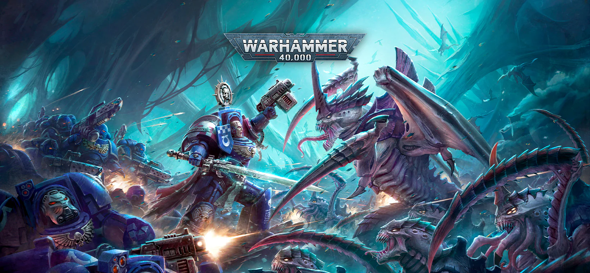

ARK
Introduction
Class : Species / Animals / Gene / Features / Charactoristics = Apply To Humans & Other Species
Purpose :
Tale : Collector = Each Colour Skin Has A SET / Loops In Loops = Fair All The Same Yet Small Differences = Now Abilities / Occult Gifts / Bio-Lab - Human Enhancement = Get Complicated Here
Mind Set : To Bring Back All The Life In It's Full = Practically You May Look Insane
Yin & Yang
????
If The Wealth Lose Their Wealth & The People Do Not Climb In Wealth = Error
The Cities & Architure Will Not Show Signs Of Decay = WE Will All Be Long Gone
Only A Few Will Know How The System Works Or How Wealth Works
A Second Chance For The Wealthy
On A Planet Scale = Wealth Battle See Market Opening & Chance To Grow A New Economy Within A Falling Economy
Now The Key Of This Story Is = What If They Die At The Same Time = WE In Free FALL
GOD OF WAR Point Of View = How Do WE Ressurect Or Create A Economy After WE Level / Destroy A Whole People Or City / Empire = This May Lead To The Key Of Ressurecting A Economy If WE ALL DIE AT ONCE = Now If You All Die When WE At WAR = Shippment / Material = They WE MOVE & Carry A Moving Market = Resitant To Market Shock - Logic = Saftey Net If All Else Fails = How Do You Feed A War Machine In The Biginning The 1st & Keep It Going While Going A Economy / While Growing Population & MArket & Keeping It In Check
Logic Of Being Blocked From Global Economy = How Far Do Need To Plan = Social Dynamic / Education They May Not Even See The Block = ???? Two Bird One Stone
????
How You Do It Also Leads To A Moral Frame Work
Frozen Seal Pods [Human Bodies] / Human Ressurection From Cells {Questions On Quality Of Ressurection} / Space & Storage / Supply Amount Calulate Time They Walk The Earth Without Mutating = WE Can Keep Going - Breeding Calculation & Movement = Now Oversite System For They Don't Follow Chain & If WE Ad Free Will = How Do You Relay Message Or Set Up Architecture To Make It Happen
Longer Life Cycle FOr Raising & Making More
WE Say Bio - Lab = Immortality / Regenration / Radiation Resitant / Eteranl Youth = NOW WE SAY WE WILL WAIT FOR YOU = WE SANE = WE Don't Want To DIE = Your FREE WILL NOT MINE
Each Side Same Problem = Now Let Get The Bio - Lab Off The Ground & Babylon = HE Gets It - WE May Choice Extinction - Let's Help HIM Evolve [WE Want To See Super Powers TOO] & Enjoy Our Time On Earth = Give Him The Power = Now That's Funny
Acceptance Test = Passed = Paradox To This Form Too = Accepting Free Will
If WE Go Down That Path = Can You Teach WE How To Make A Homunculus = WE may Get Lonely = Alchemist Jokes [You Know Something Big Was Happen Back Then For This Thought Proccess - Black Death Or Something Off The Books = WE Leave You To Look Into [May Need Cultural Clearance]]

Starting Point Of Understanding
The Ark = Learn The Garden = Shooting Star
The Ark Is The System Structure In The Human Form As Well = The Animal Kingdom
Now It Innclude Mythical Creature As Well = For It's Not Natural To HAve A ARMY Of Lions Under ONE ROOF WALKING Across - A Contient / Crossing Paths & Not Killing Each Other
Now Expansion LAW & Feeding The LION = Making Everyone Work Together & Even Mix Without Killing One Another
Now Apartheid = South Africa = ARK Joke = Lighting The Dark Contient Up = Bring Colour Back To The World
Now For The World View & How WE Get To This Conclution = Learn ROME {WILL TELL YOU HOW THEY DESTORY ARK FROM THE INSIDE IN A BIT (BIT THE HAND THAT FEED THEM)}
Europe {ROME TO GREAK} Black DEATH & GAME OF EMPIRE {BETRAY OF DIVINE PLAN = Destroy The Back System}= FALL
Check DAO Section Now India & China {OLD EMPIRE} - YIN & YANG = Kali Destroy {FELL TO THE GAME OF EMPIRE = THEY ALL SOLD OUT}
Now For The AMERICAN EMPIRE = TRY AGAIN = THE KLAN KKK [WIILL GIVE YOU A CLUE] Now THEY SOLD OUT = KILL EVERYONE ON THIS CONTieNT
Reasoning = Over A Trillion Dollar Valut = Collecting Genes Across The World & Making A System To Resurect = Tit For Tat / Trick Or Treat = There Is Way To Keep Everyone Segrigate & Working Together Under One ROOF = Example = A DRAGON & LION OR LION & MOUSE/RAT = There Are Mixed Tables = Free Will = Now You See Culture Mix & Crop Mix = Self Surstaining = Add To Collect From All Around The World = The DEVILS SUN = GREED = THE PEOPLE LIKE TO EAT & TASTE ALOT = THE LION = WE LIKE ROAM FREELY = THE TREASURY IS THE DRAGON = Don't Him Leave You = Travel ONCE & Won't Come Back = Banks
What About Puting THem On A Island = The LION WILL KILL THEM & THEIR NEEDS TO BE A ARMY OF THEM TO KEEP THE OTHER ANIMEL IN CHECK = THERE ARE TYPES OF LIONS TO = small & BIG
Now Selling Out The Ark Is = People Not Understanding Eugentics / GENES = Thy Think Stealing Your Crops [Soul class / Animal Class / Knowledge / ..... / etc] Make Them WEHN = THEY DON'T KNOW TO MAKE THEM
The Ark = It's A E{c[R]ono[s]}system = Now The Pity Game Kills ME HERE = Ignorance Is Bless = The ARK Doesn't Know It's The ARK = They SOLD OUT / They Don't Know WHich Animals They Are = They Killing Each Other - THey Also Killed The Guards - Haven't Been Trained To Work With Other Animal & They Already Mix From Architure = ERROR = FLOOD
So Even If You Set Up Every To Learn The TRUTH = They Still Hurt & Destroy The Ark = It Inclosed They HAve No Choice But To Work Together But THey Don't = FLOOD ERROR IN THE SYSTEM FLOOD TYPE BOOK
Racism = RACE SCIZEM [schism / Rapture / Revolution = Flip = Destorying Species = Not The Circle Of LIFE {OSIRIS}] = Divide & Conqure = Which ONE = Genocide [Killing GENES] Or Helping Each Other Under The Dead Of The Night [Not ALL SEX = Civilization = They Killing ARKS]
IF THAT'S The Case = THE GOD OF WAR MUST HOLD BACK = THE WAR MACHINE WILL DIE = BIO - LAB - WE STILL WIN/NIG = WE SANE
Keep Your Teaching Alive = The Old World Only A Few Know & Now Only A Few Know Of The Modern World = They HAve No Clue How To Eat People AN[D]ymore

LINK